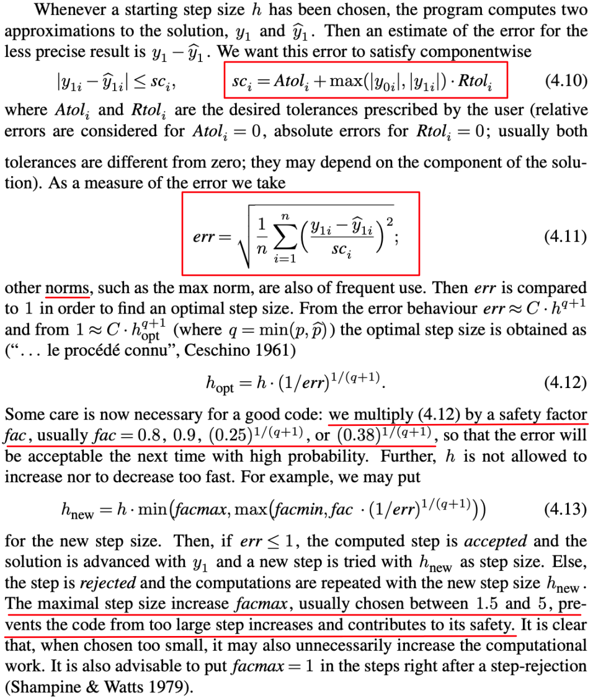

可变步长方法
这里讨论将步长h在ODE求解器中作为一个变量。因为问题的解会在缓慢变化的周期和迅速变化的周期之间移动。将固定步长变得足够小使其精度跟踪快速变化，但这意味着解的其他部分求解都会是非常缓慢的。
而最常见的方式是使用两个不同阶的求解方法，称为嵌入对(Embeded Pair)
可变步长的关键思想是检测当前步生成的误差。也就是用户所设置的容差必须能够被满足：
- 如果误差超过容差，那么就不应该步长减小
- 如果误差超过容差，那么将选择对于下一步合适的步长，然后更新
因此关键在于如何近似在每步中产生的误差。
误差选择与Runge Kutta嵌入对
最简单的改变步长的方式是将步长加倍或减半，这依赖于当前的误差。用$e_i$表示第i步估计的绝对误差，$e_i/{\vert \omega_i \vert}$表示第i步的相对误差。 但应该使用绝对误差还是相对误差，应根据情况考虑。但一种好的通用技术是使用混合的$e_i/\max({\vert \omega_i \vert}, \theta)$与容差进行比较，其中常数$\theta>0$，以避免出现较小的$\omege_i$
选择合适步长的更加复杂的方式与ODE求解器的阶数有关，将设求解器的阶数是$p$，则局部截断误差$e_i =O(h^{p+1})$。 令$T$是在每步中允许的相对容差，这意味着目的是为了保证$e_i/{\vert \omega_i \vert}<T$
假设对于某个常数$c$：
满足容差的最优步长$h$是
对于$h$和$c$，则有：
这里加上了一个安全因子0.8使得方法更加保守
前面提到的方法，都很大程度上依赖于对ODE求解器当前步误差的估计，$e_i = \vert w_{i=1} - y_{i+1}$。其中一个重要问题是为了获取这样的估计而不需要大量额外计算。 获取这种误差最长使用的方式是在运行当前感兴趣的ODE求解器的同时，运行更高阶的ODE求解器。更高阶方法对$\omega_{i+1}$的估计记作$z_{i+1}$,它比原始的$\omega_{i+1}$更精确，则有：
沿着这个思路，则可推出一些Runge Kutta Pairs,一个是$p$阶，另一个是$p+1$阶，它们共享一些所需要的计算，然后用这种方式来使得步长控制的额外代价很低。
Runge Kutta 2/3
OrdinaryDifferentialEquation.rk23 — FunctionRunge Kutta 2/3
rk23(df, t_start, t_end, h_start, y_0, n, abs_tol=1e-6, rel_tol=1e-6, fac=0.8, facmax=2, facmin=0.6)Runge Kutta 2阶/3阶嵌入对
Arguments
df: 常微分方程组函数t_start: 区间左端点t_end: 区间右端点h_start: 初始步长y_0: 方程组的初值条件n: 方程组数量abs_tol: 绝对误差（default=1e-6）rel_tol: 相对误差（default=1e-6）fac: 安全因子，控制步长的变化程度（default=0.8）facmax: 最大安全因子（default=2）facmin: 最小安全因子（default=0.6）
Runge Kutta 2阶/3阶嵌入对系数公式
步长控制
同rk45_dp
Example
function test_rk23()
df(t, y) = y.*t .+ t^3
rk23(df, 0, 1, 0.01, [1], 1)
println()
function dfs(t, y)
df1 = y[2]^2-2y[1]
df2 = y[1]-y[2]-t*y[2]^2
return Float64[df1, df2]
end
rk23(dfs, 0, 1, 0.01, [0 1], 2)
endjulia> test_rk23()
1: 0.01 [1.0000500033334168]
2: 0.03 [1.000450296719085]
3: 0.061595012215853465 [1.0019023255625061]
4: 0.0933735421521446 [1.0043877656983238]
......
49: 0.9524037994111383 [1.8145313339944313]
50: 0.9711874755179333 [1.864475164282171]
51: 0.9882896060971613 [1.9121982307523833]
52: 1.0 [1.946163064155229]
1: 0.01 [0.009802001604500815 0.9900498274919775]
2: 0.01808072705229334 [0.0174386027842691 0.9820817398768917]
3: 0.025533702395294917 [0.024262521910342574 0.9747895152927601]
4: 0.03277497389344002 [0.03069550399294721 0.9677562937426204]
......
98: 0.966926093345866 [0.13980806669852433 0.3802500259268951]
99: 0.981516365338917 [0.13783628070487436 0.374742350372051]
100: 0.9962540822738747 [0.1358423218572797 0.36926000038324647]
101: 1.0 [0.13533537093325995 0.3678793707911274]Runge Kutta: Dormand Prince 4/5
OrdinaryDifferentialEquation.rk45_dp — FunctionRunge Kutta: Dormand Prince 4/5
rk45_dp(df, t_start, t_end, h_start, y_0, n, abs_tol=1e-6, rel_tol=1e-6, fac=0.8, facmax=2, facmin=0.6)Runge Kutta: Dormand Prince 4阶/5阶嵌入对
Arguments
df: 常微分方程组函数t_start: 区间左端点t_end: 区间右端点h_start: 初始步长y_0: 方程组的初值条件n: 方程组数量abs_tol: 绝对误差（default=1e-6）rel_tol: 相对误差（default=1e-6）fac: 安全因子，控制步长的变化程度（default=0.8）facmax: 最大安全因子（default=2）facmin: 最小安全因子（default=0.6）
Dormand Prince 系数公式
步长控制

Example
function test_rk45_dp()
df(t, y) = y.*t .+ t^3
rk45_dp(df, 0, 1, 0.01, [1], 1)
println()
function dfs(t, y)
df1 = y[2]^2-2y[1]
df2 = y[1]-y[2]-t*y[2]^2
return Float64[df1, df2]
end
rk45_dp(dfs, 0, 1, 0.01, [0 1], 2)
endjulia> test_rk45_dp()
1: 0.01 [1.0000500037500626]
2: 0.03 [1.0004503037955677]
3: 0.07 [1.002459011107573]
4: 0.15000000000000002 [1.0114405576720515]
5: 0.31000000000000005 [1.0515693458693955]
6: 0.626908238067097 [1.258417618751055]
7: 0.8831300641373249 [1.650843872358512]
8: 1.0 [1.946164140264331]
1: 0.01 [0.00980198673299806 0.9900498337492146]
2: 0.03 [0.028252936002962036 0.9704455335515371]
3: 0.07 [0.060855076181021095 0.9323938201001817]
4: 0.15000000000000002 [0.11112271393407858 0.8607079888957403]
5: 0.24842403330400986 [0.15115239787448706 0.7800291612233432]
6: 0.35023793315011253 [0.17384016930556773 0.7045205113148135]
7: 0.4570032978500713 [0.18321922428238568 0.6331783401091992]
8: 0.569316454560961 [0.18232719398790645 0.5659122339459881]
9: 0.6879863459066563 [0.1737809427101828 0.5025871963036914]
10: 0.8140215103284122 [0.1598031853267181 0.4430727708639373]
11: 0.9487341496417322 [0.1422604382262948 0.387231004857348]
12: 1.0 [0.1353351750388877 0.36787954090370917]]